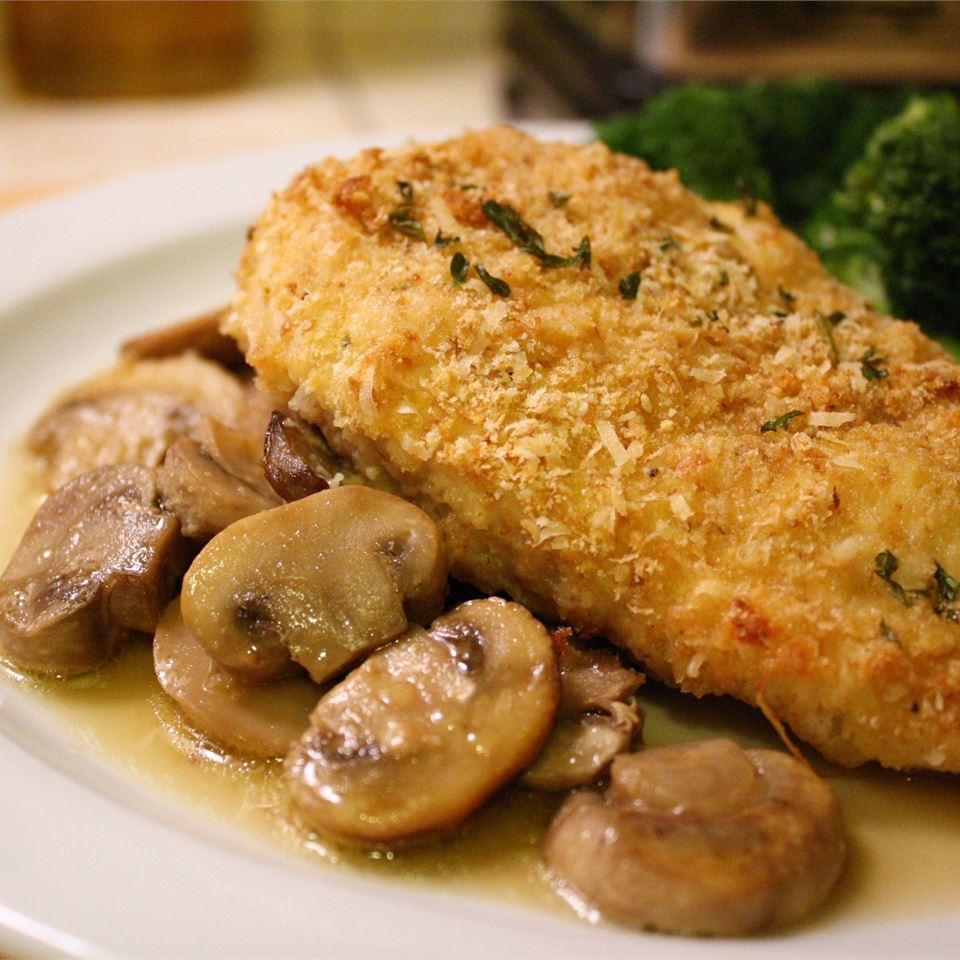

Grandma's Chicken Chardon

Description
Delicious chicken coated in bread crumbs and Parmesan cheese, with mushrooms.
Ingredients
- 8 skinless, boneless chicken breast halves
- 1 egg
- salt and pepper to taste
- 2 teaspoons garlic powder, divided
- 1 cup bread crumbs
- 1/2 cup grated Parmesan cheese
- 1 pound sliced fresh mushrooms
- 1/4 cup butter, melted
- 1 tablespoon fresh lemon juice
- 1 teaspoon chopped fresh parsley
Directions
- Preheat the oven to 375 degrees F (190 degrees C).
- In a shallow bowl, beat the egg with salt, pepper and 1 teaspoon garlic powder. In a separate dish, mix bread crumbs with 1 teaspoon of garlic powder and Parmesan cheese. Set aside.
- Mix together the melted butter and lemon juice. Pour about 2/3 of the butter mixture into the bottom of a 9x13 inch baking dish. Tilt pan to coat the bottom. Spread mushrooms in an even layer in the bottom of the dish. Dip each chicken breast into the egg mixture, then into the bread crumb mixture. Place on top of the mushrooms. Drizzle remaining butter over the chicken, and sprinkle with parsley.
- Bake uncovered for 45 minutes in the preheated oven, until chicken is golden brown and juices run clear.